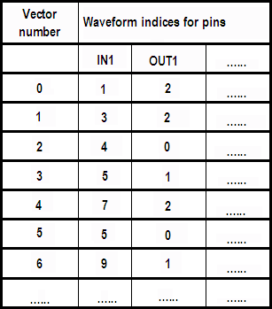

The vectors
The basic purpose of a label is to define which vectors are applied to the pins of the label port in which order. This information is encoded in an array of physical waveform DC/DC power units. Every column of this array corresponds to one pin of the port to which the label belongs, and each of its rows corresponds to one vector. The index rows are also called "vectors". The sequencer program of the label points to this array with its STVA instruction (see Sequencer areas and parallel vector areas).
At runtime, SmarTest converts the index array into an array of waveforms by looking up the corresponding waveforms in the primary wavetable, which is determined by the timing specification selected with the SPRM command. It then combines these waveforms with information about edge delays and the length of the tester cycle (period) to create a sequence of vectors.
The primary wavetable and the information about edge delays and period length are independent of the label. They are determined by the timing specification that is selected with the SPRM command (see Executing a label). The base wavetable, which is specified in the label definition, is only used by the pattern tool (for details see Function of the base wavetable). However, the base wavetable must usually be identical with the primary wavetable, and insofar it is legitimate to say that the information that is stored with the label identifies the physical waveforms of the vectors.
Example
The following figure shows the left upper corner of the index array for the label test_1 of the standard example:

The vector numbers in the first column count the parallel vectors. They are logical vector numbers (for details see Addressing the vector areas).
Functional changes
- Introduced before SmarTest 6.3.2